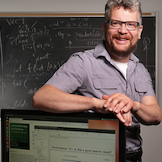

Invited Lecturers
In alphabetical order.

Prof. Charles L. A. Clarke
University of Waterloo
Prof. Gareth Jones
Dublin City University
Dr. Hang Li
Noah’s Ark Lab, Huawei Technologies
Hang Li is director of the Noah’s Ark Lab of Huawei Technologies, adjunct professors of Peking University and Nanjing University. He is IEEE Fellow, ACM Distinguished Scientist. His research areas include information retrieval, natural language processing, statistical machine learning, and data mining. Hang graduated from Kyoto University in 1988 and earned his PhD from the University of Tokyo in 1998. He worked at the NEC lab as researcher during 1991 and 2001, and Microsoft Research Asia as senior researcher and research manager during 2001 and 2012. He joined Huawei Technologies in 2012. Hang has published three technical books, and more than 120 technical papers at top international conferences including SIGIR, WWW, WSDM, ACL, EMNLP, ICML, NIPS, SIGKDD, AAAI, IJCAI, and top international journals including CL, NLE, JMLR, TOIS, IRJ, IPM, TKDE, TWEB, TIST. He and his colleagues’ papers received the SIGKDD’08 best application paper award, the SIGIR’08 best student paper award, the ACL’12 best student paper award. Hang worked on the development of several products such as Microsoft SQL Server 2005, Office 2007, Live Search 2008, Bing 2009, Office 2010, Bing 2010, Office 2012, Huawei Smartphones 2014. He has 42 granted US patents. Hang is also very active in the research communities and has served or is serving top international conferences as PC chair, Senior PC member, or PC member, including SIGIR, WWW, WSDM, ACL, NACL, EMNLP, NIPS, SIGKDD, ICDM, IJCAI, ACML, and top international journals as associate editor or editorial board member, including CL, IRJ, TIST, JASIST, JCST.
Prof. Ee-Peng Lim
Singapore Management University
Prof. Yiqun Liu
Tsinghua University
Yiqun Liu is now working as associate professor and vice chair at the Department of Computer Science and Technology in Tsinghua University, Beijing, China. His major research interests are Web Search, User Behavior Analysis, and Web Data Mining. He is a senior member of the ACM, a visiting associate professor of National Institute of Informatics (NII) in Japan and a visiting research associate professor of National University of Singapore (NUS).
He serves on the editorial boards of the Information Retrieval Journal and Foundations and Trends in Information Retrieval. He also serves as Program Co-chair of SIGIR2018, Short Paper Co-chair of SIGIR2017, Program Co-chair of NTCIR-13, General Co-chair of AIRS2016 as well as (senior) program committee members of several important international academic conferences including SIGIR, WWW, KDD, CIKM and WSDM. He published over 50 papers in top-tier academic conferences/journals and got over 2,000 citations according to Google scholar. He received the best paper honorable mention award of SIGIR2015 and AIRS2013/2016. He is also the receipt of Excellent Young Scientists Fund from the National Natural Science Foundation of China (NSFC).
He serves on the editorial boards of the Information Retrieval Journal and Foundations and Trends in Information Retrieval. He also serves as Program Co-chair of SIGIR2018, Short Paper Co-chair of SIGIR2017, Program Co-chair of NTCIR-13, General Co-chair of AIRS2016 as well as (senior) program committee members of several important international academic conferences including SIGIR, WWW, KDD, CIKM and WSDM. He published over 50 papers in top-tier academic conferences/journals and got over 2,000 citations according to Google scholar. He received the best paper honorable mention award of SIGIR2015 and AIRS2013/2016. He is also the receipt of Excellent Young Scientists Fund from the National Natural Science Foundation of China (NSFC).

Prof. Mark Sanderson
Royal Melbourne Institute of Technology
Prof. Mark Sanderson is Director of the RMIT's Enabling Capability Platform in Information and Systems at RMIT University in Melbourne, Australia. The goal of the platform is to promote interdisciplinary research across the university. Prof Sanderson is also head of the RMIT Information Retrieval (IR) group, which is regarded as the leading IR group in Australia. He started researching IR in 1988 when he built a new interface for a UK newspaper’s article search engine. He completed his PhD in the 1990s at the University of Glasgow under the supervision of Keith van Rijsbergen. He subsequently worked, as a postdoc for Bruce Croft at UMass Amherst and then held a faculty position at the University of Sheffield in the UK. In 2006, he was a visiting researcher at Microsoft Research in Redmond working with Susan Dumais. He is currently co-editor of Foundations and Trends in Information Retrieval. He is also an associate editor of IEEE Transactions on Knowledge and Data Engineering and of ACM Transactions on the Web. Prof. Sanderson was co-PC chair of ACM SIGIR in 2009 and 2012, and general chair of the conference in 2004. Prof Sanderson is also co-PC chair of ACM CIKM in 2017, which will be held in Singapore.
Prof. Chirag Shah
Rutgers University
Chirag Shah is an Associate Professor in both the School of Communication & Information (SC&I) and the Department of Computer Science at Rutgers University, USA. His research interests include studies of interactive information retrieval/seeking, especially those involving social and collaborative contexts. Dr. Shah received his MS in Computer Science from University of Massachusetts (UMass) at Amherst, USA, and PhD in Information Science from University of North Carolina (UNC) at Chapel Hill, USA. He directs the Center for Data Science and Social Systems (CDS3) and the InfoSeeking Lab at Rutgers University where he investigates issues related to information seeking, interactive information retrieval, and social media, supported by grants from National Science Foundation (NSF), National Institute of Health (NIH), Institute of Museum and Library Services (IMLS), Google, and Yahoo. He also serves as a consultant to the United Nations Data Analytics on various Data Science projects involving social and political issues, peacekeeping, climate change, and energy. More information about Dr. Shah can be found from http://chiragshah.org/.